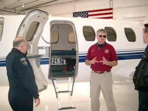
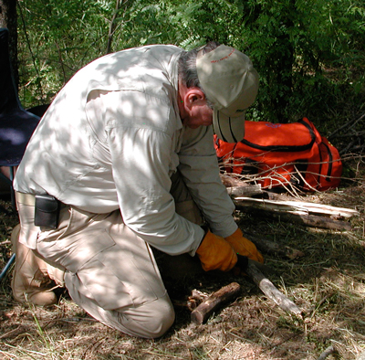
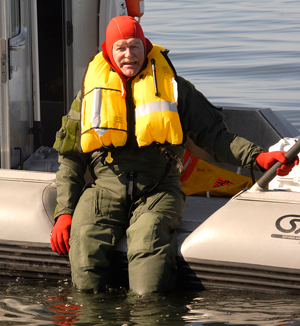
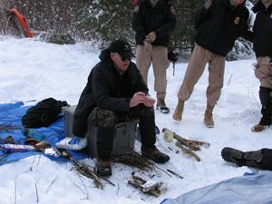
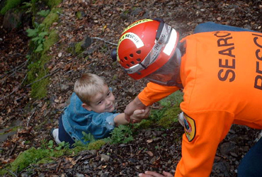

Emergency Preparedness | Emergency Management and Public Safety | International Travel and Global Survival | Search and Rescue | Comprehensive Emergency Management Planning for Colleges and Universities
We Offer Training
Classroom and Field Training
Workshops
Consulting
Demonstrations of products and techniques
Teaching Seminars
Planning
Emergency Preparedness
Emergency preparedness generally refers to individuals and families evaluating risks to which they might be exposed and preparing accordingly. Sometimes this includes churches, neighborhoods and small communities. It may include training, stocking up on supplies, developing an organizational structure, emergency communications and others. Or it may be just an individual who wants to be better prepared when engaging in a favorite activity.
The three categories discussed on the home page have many elements. Each one of these categories includes some popular topics.

Unexpected Emergencies
- Got Stuff? Know how to use it?
- Survival Kits
- The Practical Backpack
- What works and what doesn't
- Map, Compass, GPS
- Wilderness Medicine
- Outdoor Safety
- Myths and Misconceptions of Survival
- Short Term Survival
- How to Stay Found
- Improvising
- Home Security
Please contact us for more information.
Major Events
While there are many scenarios and multiple variations within those scenarios, there are three common actions that people take:
Shelter in place: This usually means staying at home and using whatever resources are available to meet the daily needs of the household members to include shelter, rest, food, water, medical care and security. Most people are not prepared for more than a few days at best before they must have outside help. If that help is not forthcoming things quickly become critical.

Abandon ship: Load up what you have in the family car and get out of town, if you can. Very few average citizens have a plan, the resources or the know-how to do this effectively. An exception may be some folks who live in coastal areas subject to hurricanes. Even there, even if they have been through a hurricane before, many are still not prepared. This takes pre-planning, resources and training to pull off successfully.
Grouping together: If the situation is such that a community is not completely wiped out or otherwise made uninhabitable, residents may be able to pool their talents and resources to ride out the emergency. This is much more difficult in today's society where many folks do not know their next door neighbor.
A community plan can be very effective but it takes effort, resources and cooperation. Rural communities are much more suitable for this type of plan than most urban areas.
Surviving the Future
- The Future is Now
- TEOTWAWKIT
- The Cosmic Question
- Beyond Beans and Bullets
- The Group in the Middle
Please contact us for more information.

Emergency Management and
Public Safety
Natural and man-made emergencies and disasters can occur without warning and can tax the resources of even the best prepared organization, agency or jurisdiction. A professional emergency management specialist can assess an needs, highlight vulnerabilities, and recommend comprehensive strategies to prepare for an effective response to a variety of emergencies.
We provide extensive services
in the following areas:
- Comprehensive Emergency Management Plans for colleges and universities
- FEMA compliant plans for other types of institutions as well as government agencies, businesses and jurisdictions
- Search & Rescue (SAR) plans for volunteer and local and
state government agencies - Incident Command System training
- Consulting and evaluation of existing plans
- Safety and security assessments
International Travel and Global Survival
Survival is often thought of as being stranded in some remote location and living off of the land until rescued. Much of what is taught as survival is based on popular myths and misconceptions.

The current popularity of "survivor" shows on television has only contributed to the confusion. Knowing how to plan and how to select and use the right equipment combined with state-of-the-art training can make the difference between life and death in a survival emergency.
Survival situations may result from:
- Becoming lost
- An airplane crash
- A vehicle accident
- Sinking of a vessel on open water
- Kidnapping or hostage taking
Survival training includes:
- International travel
- Specialty training for missionary organizations and for churches who sponsor mission trips
- Terrorism and captivity
- Fundamentals of outdoor safety
- Surviving the unexpected emergency
- Specialized training for aviation units and aircrews
- Surviving in any environment: jungle, desert, mountains/high altitude, cold weather, and open water
- Personal, team, and aircraft survival kits
EMS offers a wide variety of package options that can be designed to help prepare you and your organization for operations in remote areas and in extreme environments around the world.
Search and Rescue
Every day around the world people go missing for a wide variety of reasons. Some are just lost, some are accident victims, some are victims of a crime, and some may not even be aware they are lost, such as children and those who suffer from dementia.

A rapid response, with the right resources, and doing the right things in the right order can be life saving. Lack of planning, training, and experience can cost lives.
We can prepare a complete search and rescue plan for your team or your jurisdiction that addresses all of these vital issues. In addition, we can tailor a training program to meet your specific needs.
Search and Rescue Training Topics
- Search management theory and practice
- Incident Command System (ICS)
- Field operations
- Field team member and team leader skills
- Clothing and equipment
- Environmental issues
- Urban missing person operations
- Missing person behavior analysis
- Missing person investigation
- Specialized training for law enforcement agencies
- Aviation units and SAR operations
- Missing/overdue aircraft searches
- Electronic signals and direction finding: ELT, EPIRB, PLB
- Legal issues
- Building a local or state SAR plan
- Memoranda of Understanding between government agencies and volunteer units
- Coordination between law enforcement and volunteer agencies
- SAR training and certification standards
- Developing and managing a SAR team
- Outdoor safety for the SAR person
- Aerial observer--fixed wing and helicopter
- Helicopter operations and personnel safety
- Land navigation
- Track and clue awareness
We coordinate with a group of highly qualified associates to bring you the best in consulting, planning and training.
Comprehensive Emergency Management Planning for Colleges and Universities
Emergency Management Specialists offers planning and consulting services in emergency preparedness, response and recovery for disasters and for other events that may adversely affect the institution.
Colleges and universities are expected to have a comprehensive emergency management plan that addresses all hazards. We can help you develop a plan that will meet all local, state and federal requirements.
Our team of experts will be glad to come to your campus to review and evaluate your present plan and assess your campus safety and security systems and to assist you with any phase of planning and/or upgrades.
- Emergency management concepts
- Campus safety and security assessment
- Hazard mitigation
- Campus security and law enforcement activities
- Communications and information systems
- Campus alerting and notification systems
- Natural and human caused disasters
- Civil unrest and other major disruptions
- Terrorism and acts of violence
- Evacuation and shelter-in-place planning
- Maintaining vital services in an emergency
- Program risk analysis
- Evaluation of international studies programs
- Foreign travel preparation and safety
- Incident Command System
- Emergency operations facilities
- Preparing an emergency procedures manual
- Short term and long term recovery
Planning and consulting services may be available for other types of institutions as well as government agencies, businesses, and jurisdictions. Contact us for more information.